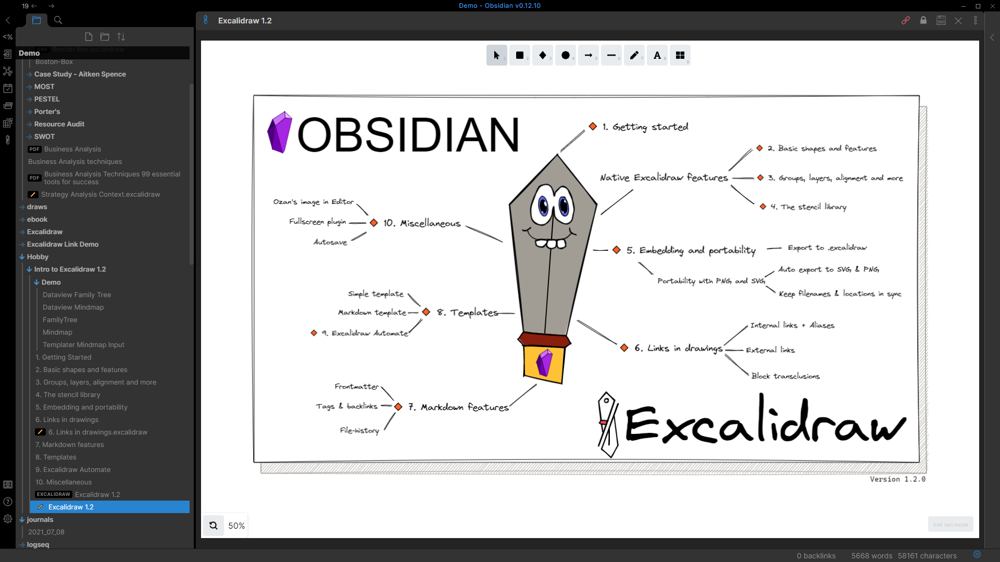
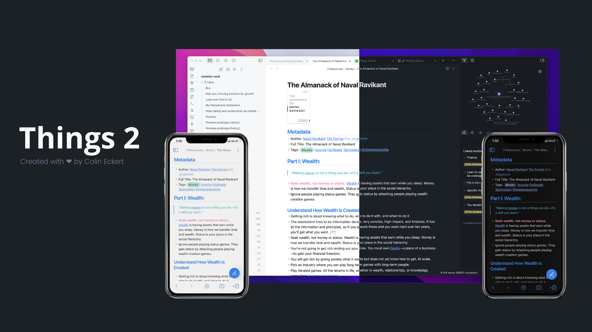
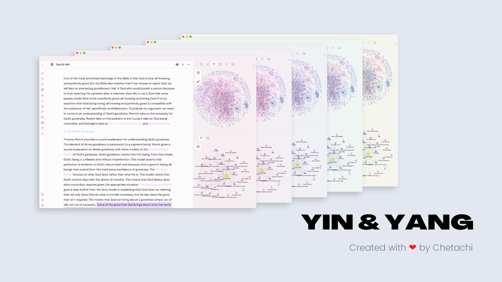

Gems of the Year 2021
Winners are first nominated and then selected by number of votes by community members. Lucky winners were chosen randomly among all participants of the same category.
Plugins
1st place Dataview by Michael Brenan

From the nominator:
My words pale in comparison to what it can do for the various users of Obsidian, but personally? It allows me to build landing pages and dashboards, automatically generate tables from hundreds of notes, create my own wiki, and even fetch me news about upcoming video games.
2nd place Templater by SilentVoid
From the nominator:
This plug-in is a life saver and is by far my most used plugin, saving me a lot of time entering information but also helping me give consistent structure to those notes that need it. So flexible and powerful!
3rd place Excalidraw by Zsolt Viczián

From the nominator:
Life changing for me. In fact, it’s the only plug-in that I’ve installed that I kept. Often, I use images & spatial layouts to think & deep dive on notes, thoughts & topics. One of the limitations I often run into in most knowledge base apps is they excel in text but fell short with visual layouts. This plug in let’s me sketch things all & stay in my knowledge base (Obsidian). The fact that links work in the images is game changing.Themes
1st place Things by Colin Eckert

Credit and special thanks: kepano of Minimal, Chetachi E. of Yin and Yang
From the nominator:
I’ve long been a fan of the clean design aesthetic behind the Things app, and the Obsidian theme wonderfully harks back to it. It’s modern, minimalist, clean, with subtle details that are brilliant — bullets, arrows, numbered lists all have a deep grey to them that has them distinguished from the body font, the iconography is clean and wonderful. The color combinations are well-designed. And as someone who knows a thing or two about design and CSS, Things serves as an amazing base upon which I could easily make my own modifications, tweaking in small ways to my personal preference with relative ease. A wonderful, wonderful theme that when paired with key extensions like Hider has Obsidian achieve a more Mac-friendly app design feel that I absolutely adore.
2nd place Yin and Yang by Chetachi E.

Credit and special thanks: mgmeyers of California Coast
From the nominator:
What Chetachi has built is nothing short of brilliant. From scratch, she’s created one of the most beloved themes in the community. Yin and Yang was my theme of choice before making my own, and I leaned heavily on her work (namely Y&Y’s awesome custom icons). The love and sweat evident in the theme’s robust design, from supporting all kinds of customization to the uncompromising level of detail that makes the app feel so native, make it one of if not the best theme available. I particularly enjoy using it on mobile, where the UI/UX design choices really come into focus. Y&Y made opening Obsidian on my phone each day to jot quick notes and tasks a blast and it deserves a nomination, if at the very least for Chetachi’s warm passion and willingness to help those in the community. She’s become someone I consider a friend and is always there to offer help.
3rd place Sanctum by José Daniel Mourão

Credit and special thanks: kepano of Minimal, mgmeyers of California Coast
From the nominator:
Sanctum supports all of my weird fiddly requests, like styling <cite> and <aside>, faux admonitions using data-task with checkboxes, and beautiful touches for plugins like wordsprint, fantasy calendar, etc. It does this while having an incredible attention to detail, making the entire Obsidian interface feel smooth and modern, and only using one (incredibly unambiguous and easy to read) font so I don’t have to think about fonts. The developer is responsive, responsible, and most importantly, prioritizes all the little details that make a theme great — even on publish and mobile. Sanctum is everything I wish I had been capable of building when I put together Palatinate, and I’m thrilled it exists, mostly because it has finally allowed me to stop caring about CSS.
4th place
Primary by Cecilia May
5th place California Coast by mgmeyers
6th place ITS by SlRvb
7th place Shimmering Focus by
pseudometa
8th place Deep Work by nikbrunner
9th place Prism by Damian Korcz
10th place Bubble Space by Emrie Candera
Credit and special thanks: ITS theme, Yin and Yang theme, bobby, crystallinedoll, pseudometa
Content creators
1st place
Eleanor Konik (Obsidian Roundup)
2nd place Bryan Jenks
3rd place Nick Milo (Linking Your
Thinking)
4th placeObsidian Community Talks by SkepticMystic, argentum et
al
5th place Obsidian Hub by argentum,
Clare Macrae, koala, pseudometa, SlRvb et al
6th place Santi Younger
7th place Zsolt Viczián
8th place Federico Viticci (MacStories)
9th place Filipe Donadio
10th place Curtis McHale
Workflows
1st place
Detailed write up of the Zotero → Obsidian workflow by Cat
2nd place Fiction project management
by Eleanor Konik
3rd place Obsidian for TTRPG by Leah
Ferguson, Andy Polaine, SlRvb, Jeremy Valentine, Nicole van der Hoeven
LuckyComprehensive Academic Workflow from Reading to Writing in
Markdown by pseudometa
Lucky Qualitative Analysis Using
Obsidian by Ryan J. A. Murphy
Lucky Second brain setup by lkadre
Achievements
1st place
Had articles published in paying markets for the first time by Eleanor Konik
2nd place Ph.D. unlocked by Verma
Vivek
3rd place Obsidian instilled a love of
coding in me by Joschua
LuckySuper-helper mnvwvnm has helped build a strong community of
practice with the help of Obsidian
Lucky Apple Loves Leah by Leah
Ferguson
Lucky I’m making a free tabletop
roleplaying game, from scratch, in Obsidian by Seraaron